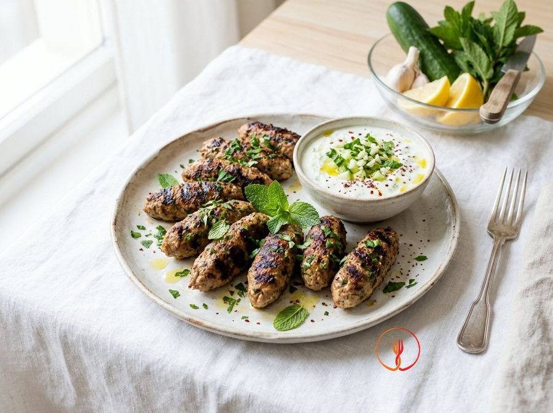

Turkey and Mint Kofta with Yoghurt Sauce
Spiced, oblong-shaped meatballs typical of the Middle East, made with budget-friendly white meat. Accompanied by a fresh sauce that balances the richness of the meat.
Ingredients
- Minced turkey500 g
- Plain Greek yoghurt200 g
- Garlic1 clove
- Fresh mint1 bunch
- Cucumber1/2 pcs
- Breadcrumbs40 g
- Cumin5 g
- Extra virgin olive oil20 ml
Allergens
Gluten, Milk
Method
- In a bowl, combine the minced turkey, breadcrumbs, cumin, half of the chopped mint and half of the crushed garlic.
- Knead with your hands until the mixture is homogeneous; shape into cylindrical meatballs about 6-8 cm long.
- Thread each meatball onto a wooden skewer (optional) to make them easier to turn during cooking.
- Heat a griddle or non-stick frying pan with the oil and cook the koftas for 12-15 minutes, turning them on all sides until well browned.
- For the sauce: grate the cucumber, squeeze it to remove the water and combine it with the yoghurt, the remaining mint and a pinch of salt.
- Check that the meat is cooked through: the turkey must be white in the centre with no pink traces.
- Serve the koftas hot, accompanied by the cold yoghurt sauce for a pleasant temperature contrast.
Nutrition facts (estimate)
| Per serving (191 g) | Per 100 g | |
|---|---|---|
| Energy | 1213 kJ / 290.0 kcal | 635.1 kJ / 151.8 kcal |
| Protein | 32.0 g | 16.8 g |
| Carbohydrates | 12.0 g | 6.3 g |
| of which sugars | – g | – g |
| Fat | 13.0 g | 6.8 g |
| of which saturates | – g | – g |
| Fibre | – g | – g |
| Salt | – g | – g |
AI estimates based on average CREA / USDA data: indicative only, not a substitute for medical or dietitian advice.
Open the recipe in the app for the shopping list, ingredient sheets and nearby shops.